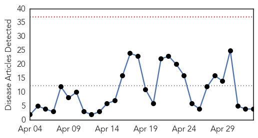
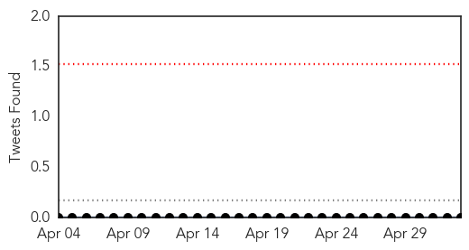
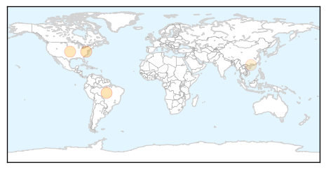
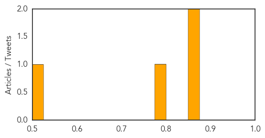
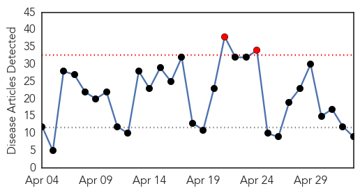

Measles
30-Day Web Trend
0 alerts, 0 warnings

30-Day Twitter Trend
0 alerts, 0 warnings

Article Locations
Article Confidences
Top Articles:
Top Tweets:
-
No tweets found for May 03, 2015
Influenza
30-Day Web Trend
2 alerts, 0 warnings

30-Day Twitter Trend
1 alerts, 0 warnings

Article Locations

Article Confidences

Top Articles:
- 0.988
- Mask or flu jab ultimatum?
- 0.963
- Avian influenza strikes wild and domestic birds
- 0.897
- Iowa becomes 3rd state to declare emergency over avian flu outbreak - Panorama
- 0.834
- Turkeys affected by avian flu in Steele Co.
- 0.804
- Minnesota news in brief at 7:58 p.m. CDT
- 0.730
- Iowa declares state of emergency
- 0.707
- Third Jefferson County farm infected with avian influenza
- 0.659
- Testimony to the Maine Legislature, Suzanne Humphries MD
- 0.592
- Inside Australia's most haunted hotel Quarantine Station
Top Tweets:
-
No tweets found for May 03, 2015